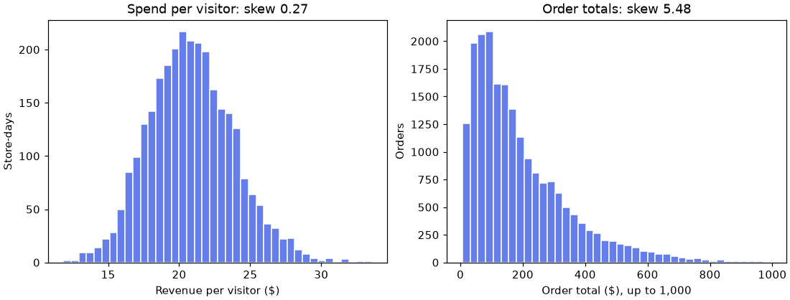
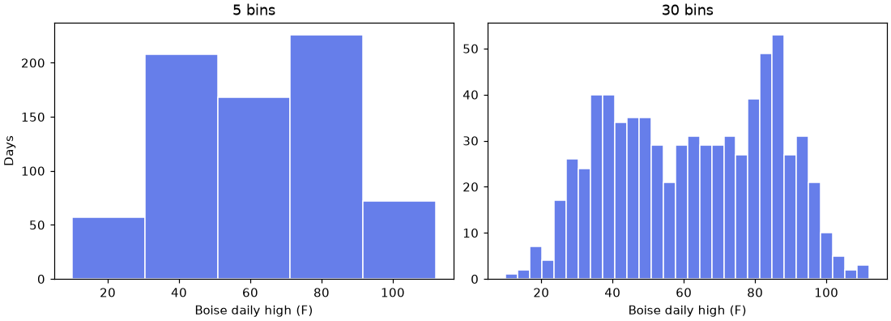
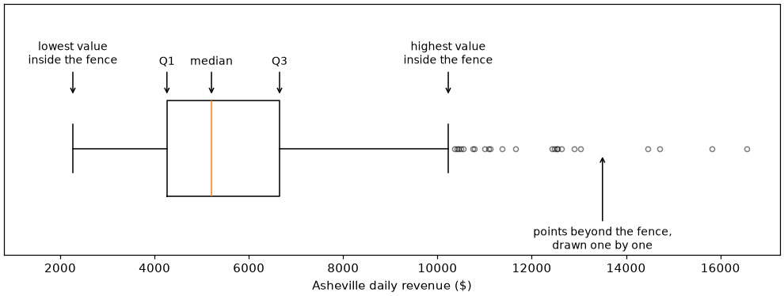
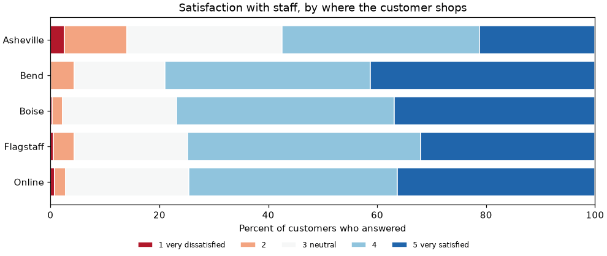
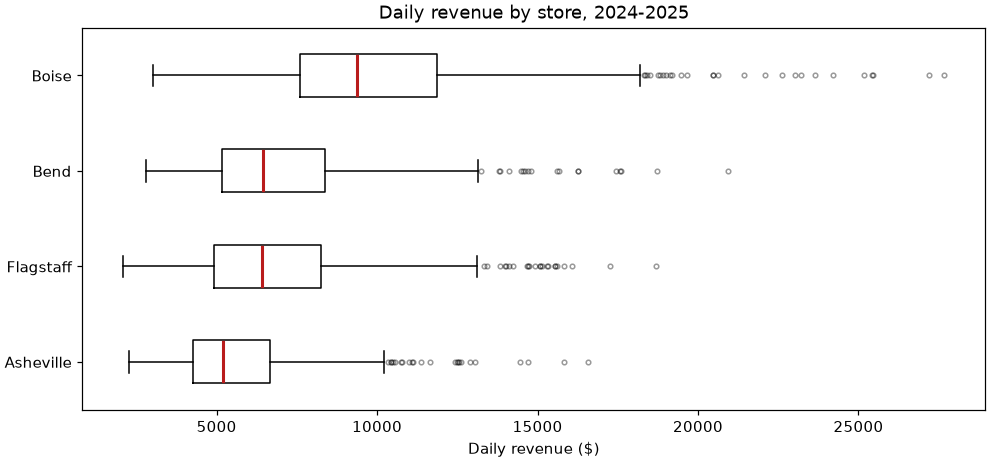

📐 Lesson 4.2: Descriptive Statistics II: Shape, Position and Outliers
Go beyond center and spread: measure the shape of a column, locate any value inside it, decide what to do with the values that stand apart, and compare groups fairly.
🎯 Learning Objectives
By the end of this lesson, you will be able to:
- Describe the shape of a distribution with a histogram and a skewness value, and say what the shape implies for your choice of summary
- Locate a value within its column using percentiles, quantiles and z-scores
- Apply the IQR and z-score outlier rules, explain why they disagree, and choose a defensible action for flagged values
- Read every line of
describe()and every part of a box plot - Summarize by group with
groupby().agg(), and summarize 1-to-5 survey answers as the ordered categories they are
In This Lesson
⛰️ Shape: Symmetry and Skew
In Lesson 4.1 you summarized a column with a center and a spread, and you saw that the right pair depends on whether the data has a long tail. That makes shape the third thing to know about a column, and in practice the first thing to check.
💡 Mental Model: A Pile of Sand
Pour every value of a column onto a number line, like sand. The pile that forms is the distribution, and a histogram is a photograph of it. Center says where the pile sits. Spread says how wide it is. Shape says whether it is one even mound, a mound with a long ramp on one side, or two mounds. Every other summary is an attempt to describe that pile without showing the photograph.
Load the data for this lesson. You will also compute one new column: the revenue a store takes per visitor through the door.
import numpy as np
import pandas as pd
import matplotlib.pyplot as plt
pd.set_option("display.width", 150)
pd.set_option("display.max_columns", 20)
orders = pd.read_csv("data/orders.csv", parse_dates=["order_date"])
daily = pd.read_csv("data/daily_sales.csv", parse_dates=["date"])
totals = orders["order_total"]
daily["spend_per_visitor"] = daily["revenue"] / daily["visitors"]
print(daily[["date", "store", "visitors", "revenue", "spend_per_visitor"]].head(4))Output
date store visitors revenue spend_per_visitor
0 2024-01-01 Asheville 201 5017.07 24.960547
1 2024-01-01 Bend 200 4132.92 20.664600
2 2024-01-01 Boise 333 5962.00 17.903904
3 2024-01-01 Flagstaff 144 3061.66 21.261528Now look at two piles side by side.
spend = daily["spend_per_visitor"].dropna()
fig, (ax1, ax2) = plt.subplots(1, 2, figsize=(10, 3.8), layout="constrained")
ax1.hist(spend, bins=40, color="#667eea", edgecolor="white")
ax1.set_title(f"Spend per visitor: skew {spend.skew():.2f}")
ax1.set_xlabel("Revenue per visitor ($)")
ax1.set_ylabel("Store-days")
ax2.hist(totals[totals <= 1000], bins=40, color="#667eea", edgecolor="white")
ax2.set_title(f"Order totals: skew {totals.skew():.2f}")
ax2.set_xlabel("Order total ($), up to 1,000")
ax2.set_ylabel("Orders")
plt.show()
Putting a Number on It
Skewness measures lopsidedness. It is zero for a perfectly symmetric pile, positive when the long tail is on the right, and negative when it is on the left.
products = pd.read_csv("data/products.csv")
print("product ratings :", round(products["rating"].skew(), 2))
print("spend per visitor :", round(spend.skew(), 2))
print("daily revenue :", round(daily["revenue"].skew(), 2))
print("order totals :", round(totals.skew(), 2))
print(" without the 12 bulk orders:", round(totals[totals <= 2000].skew(), 2))Output
product ratings : -0.02
spend per visitor : 0.27
daily revenue : 1.51
order totals : 5.48
without the 12 bulk orders: 1.64| Skewness | Reading | Typical summary |
|---|---|---|
| Between -0.5 and 0.5 | Roughly symmetric | Mean and SD are fair |
| 0.5 to 1 (either sign) | Moderately skewed | Check both; say which you used |
| Beyond 1 (either sign) | Strongly skewed | Median and IQR |
These cutoffs are a convention, not a law. They do one job: telling you when to stop trusting the mean as "typical". Order totals at 5.48 are far past any cutoff. Daily revenue at 1.51 is skewed too, for a reason you will uncover in the project.
⚠️ Three Things Skewness Does Not Tell You
It does not say the pile has one hump. Boise's daily highs in Lesson 4.1 were symmetric with two humps, winter and summer. Only the picture shows that. It is not robust. The formula cubes each deviation, so a few extreme values dominate it: twelve bulk orders out of 20,302 move it from 1.64 to 5.48. "Mean above median" is a rule of thumb for right skew, usually true for one-humped data and not guaranteed. Always look at the histogram.
Taming a Tail with a Logarithm
Money often behaves multiplicatively: the step from $50 to $100 feels like the step from $500 to $1,000. Taking the logarithm turns those equal ratios into equal distances, and frequently pulls a right-skewed pile into something close to symmetric.
log_totals = np.log(totals)
print("skew of order totals :", round(totals.skew(), 2))
print("skew of log(order totals):", round(log_totals.skew(), 2))Output
skew of order totals : 5.48
skew of log(order totals): -0.41From 5.48 to -0.41. You will not need the log scale in this lesson, but remember the trick: later methods that prefer symmetric data often work much better on the logarithm of a money column.
📍 Position: Percentiles and Quantiles
Center, spread and shape describe the whole pile. Position describes one value's place in it. "This order was $517" says little. "This order was larger than 95% of all orders" says a lot.
The p-th percentile is the value with p percent of the data at or below it. A quantile is the same idea on a 0-to-1 scale, which is what pandas uses. You have met three of them already: the quartiles are the 0.25, 0.50 and 0.75 quantiles.
print(totals.quantile([0.10, 0.25, 0.50, 0.75, 0.90, 0.95, 0.99]))Output
0.10 41.9500
0.25 78.8500
0.50 146.8500
0.75 264.9500
0.90 405.3950
0.95 516.7975
0.99 737.4430
Name: order_total, dtype: float64Read down the list and the distribution appears: one order in ten is under $42, half are under $147, one in ten is over $405, and only one in a hundred is over $737. Seven numbers, and you could sketch the histogram from them.
The Reverse Question: What Percentile Is This Value?
Going from a value to its position uses the trick from Lesson 4.1: the mean of a boolean column is a proportion.
from scipy import stats
print("share of orders at or below $500:", round((totals <= 500).mean(), 4))
print("scipy percentileofscore :", round(stats.percentileofscore(totals, 500, kind="weak"), 2))Output
share of orders at or below $500: 0.9443
scipy percentileofscore : 94.43A $500 order sits at about the 94th percentile. percentileofscore answers on the 0-to-100 scale; kind="weak" means "at or below", matching the line above it.
⚠️ Two Scales, Easy to Mix Up
pandas .quantile() takes a fraction from 0 to 1. NumPy's np.percentile() takes a number from 0 to 100 (np.quantile() takes 0 to 1). np.percentile(totals, 90) and totals.quantile(0.90) are the same number.
When the Cut Falls Between Two Values
With four values, where is the 25th percentile? There is no single right answer, and software has to choose a convention.
four = pd.Series([10, 20, 30, 40])
print(four.quantile(0.25)) # default: interpolate
print(four.quantile(0.25, interpolation="lower")) # an actual data valueOutput
17.5
10By default pandas and NumPy slide proportionally between the two neighbors ("linear" interpolation), giving 17.5. Other tools use other rules, which is why a spreadsheet and pandas can disagree slightly on a quartile. With thousands of rows the differences vanish. With ten rows, do not be alarmed by them.
📏 Position: z-Scores
Percentiles locate a value by rank. A z-score locates it by distance: how many standard deviations it lies above or below the mean.
z = (value - mean) / standard deviation
A z-score of 0 is exactly average, +1 is one SD above, -2 is two SDs below. The units cancel, so z-scores let you compare things measured on different scales, or the same thing in different contexts. Here is a question a regional manager might ask: is a $12,000 day a big deal?
for store in ["Asheville", "Boise"]:
revenue = daily.loc[daily["store"] == store, "revenue"]
z = (12000 - revenue.mean()) / revenue.std()
share = (revenue >= 12000).mean()
print(f"{store:<9} mean {revenue.mean():8,.0f} SD {revenue.std():6,.0f} "
f"z = {z:5.2f} days at or above: {share:.1%}")Output
Asheville mean 5,704 SD 2,064 z = 3.05 days at or above: 1.5%
Boise mean 10,144 SD 3,715 z = 0.50 days at or above: 24.3%The same $12,000 is three standard deviations above Asheville's average, something that happens on about 1.5% of days, and half a standard deviation above Boise's, which happens on about one day in four. The raw number cannot tell you that. The z-score can.
To convert a whole column, do the arithmetic on the Series:
z_totals = (totals - totals.mean()) / totals.std()
print("mean of z:", abs(round(z_totals.mean(), 6)), " SD of z:", round(z_totals.std(), 6))
print("largest z:", round(z_totals.max(), 1), " smallest z:", round(z_totals.min(), 2))Output
mean of z: 0.0 SD of z: 1.0
largest z: 26.3 smallest z: -1.05Standardizing always produces a column with mean 0 and SD 1. It does not change the shape: the largest order is 26 SDs above the mean while the smallest is barely 1 SD below it, because the pile is as lopsided as before.
💡 What Counts as a Large z?
You may have heard "95% of values are within 2 SDs of the mean". That is a property of one particular bell-shaped distribution, the normal distribution, which Lesson 4.3 introduces. For data with that shape, |z| above 2 is unusual and above 3 is rare. For skewed data the guideline fails, as the 26 shows. A z-score is always a valid distance; turning it into "how rare" needs to know the shape.
scipy.stats.zscore(values) does the same calculation, with one familiar catch: it divides by the population SD (ddof=0) unless you pass ddof=1.
🚩 Outlier Rules
An outlier is a value that sits far from the rest of its column. "Far" needs a definition, and there are two standard ones. Each is built from a center-and-spread pair you already know.
Rule 1: The IQR Fences
Build a fence 1.5 IQRs below Q1 and another 1.5 IQRs above Q3. Anything outside the fences is flagged. This is the rule box plots use.
q1, q3 = totals.quantile(0.25), totals.quantile(0.75)
iqr = q3 - q1
lower_fence = q1 - 1.5 * iqr
upper_fence = q3 + 1.5 * iqr
flag_iqr = (totals < lower_fence) | (totals > upper_fence)
print("fences:", round(lower_fence, 2), "to", round(upper_fence, 2))
print("flagged:", flag_iqr.sum(), f"({flag_iqr.mean():.1%} of orders)")Output
fences: -200.3 to 544.1
flagged: 848 (4.2% of orders)Rule 2: z-Scores Beyond 3
flag_z = z_totals.abs() > 3
print("flagged:", flag_z.sum(), f"({flag_z.mean():.1%} of orders)")
print("smallest flagged order:", totals[flag_z].min())Output
flagged: 217 (1.1% of orders)
smallest flagged order: 731.85Two respectable rules, two very different answers: 848 orders or 217. The IQR rule draws its line at $544, the z-score rule at about $732. They disagree because they are built on different summaries. The mean and SD are inflated by the very values being judged, which pushes the z-score line outward. The quartiles are not, so the IQR fence stays closer in.
⚠️ A Flag Is a Question, Not a Verdict
Both rules quietly assume a roughly symmetric, bell-like pile, where values beyond the line really are rare. Order totals are not shaped like that. Look at the lower fence: -$200.30. No order can be flagged as too small, and 4% of all orders are flagged as too large. Those 848 orders are mostly customers buying a tent and a sleeping bag together. The rule has not found errors. It has rediscovered that the data is skewed.
How much would you lose by deleting them?
print(f"flagged orders: {flag_iqr.mean():.1%} of orders, "
f"{totals[flag_iqr].sum() / totals.sum():.1%} of revenue")Output
flagged orders: 4.2% of orders, 15.4% of revenueFour percent of the orders and almost fifteen percent of the money. Removing them "to clean the data" would be one of the more expensive mistakes an analyst can make.
🧑⚖️ What to Do with an Outlier
The rules find candidates. Judgment decides what happens to them, and the judgment follows a short sequence of questions.
Apply it to Pinecrest's twelve largest orders. Step one: are they errors? Look them up.
items = pd.read_csv("data/order_items.csv")
bulk_ids = orders.loc[totals > 2000, "order_id"]
bulk_lines = items[items["order_id"].isin(bulk_ids)]
print("orders above $2,000:", len(bulk_ids))
print("largest quantity on each:", sorted(bulk_lines.groupby("order_id")["quantity"].max().tolist()))
print(orders.loc[totals > 2000, ["channel", "status"]].value_counts())Output
orders above $2,000: 12
largest quantity on each: [25, 26, 27, 28, 30, 30, 30, 32, 35, 38, 39, 39]
channel status
online completed 12
Name: count, dtype: int64Every one of them is a completed online order with a single line of 25 to 39 units. These are outfitters buying in bulk: real sales, real revenue. They are not errors, so they stay in the data. Whether they belong in a particular analysis depends on the question:
| Situation | Reasonable action | Pinecrest example |
|---|---|---|
| A provable error | Correct it if you can, remove it if you cannot, and keep a note of what you did | The eight totals in orders_messy.csv that lost their decimal point (Lesson 2.3) |
| Real, and part of what you are measuring | Keep it. Describe the column with the median and IQR | Total revenue: the bulk orders are revenue |
| Real, but a different kind of thing | Analyze the groups separately and say you did | "What does a typical shopper spend?" Outfitters are not typical shoppers |
| Real, and you must use a mean-based method | Report results with and without, or transform (log), or cap extreme values at a stated percentile | A model of order size on the log scale |
The option people reach for first, silently deleting whatever a rule flags, is not in the table. If removing a value changes your conclusion, the reader deserves to know the value existed.
✅ You Have Already Been Doing This
In Lesson 0.1 you met the $4,893 order and were told it was "a question, not automatically a mistake". Everything in this section is that sentence, with tools attached.
📋 Reading describe()
You have used .describe() since the first lesson. You can now read every line of it.
print(totals.describe())Output
count 20302.000000
mean 194.596663
std 178.760964
min 6.380000
25% 78.850000
50% 146.850000
75% 264.950000
max 4893.000000
Name: order_total, dtype: float64| Line | What it is | What to check |
|---|---|---|
count | Non-missing values | Is it lower than the number of rows? Then values are missing |
mean, 50% | Mean and median | Far apart means skew: here 194.60 against 146.85 |
std | Sample SD (ddof=1) | Comparable to or larger than the mean, for a column that cannot be negative, means a long right tail |
25%, 75% | Q1 and Q3 | Subtract for the IQR. Compare 75% - 50% with 50% - 25%: unequal halves mean skew |
min, max | The extremes | Impossible values (negative prices), and a max far beyond the 75% line |
The last check is worth doing in your head every time. Here the upper half of the box (264.95 - 146.85 = 118.10) is much wider than the lower half (146.85 - 78.85 = 68.00), and the max is eighteen times the 75th percentile. You know it is right-skewed with extreme values before drawing anything.
You can choose the percentiles, and you can ask for text columns too, which get a different set of lines:
print(totals.describe(percentiles=[0.05, 0.5, 0.95]).round(2))
print()
print(orders[["channel", "status"]].describe())Output
count 20302.00
mean 194.60
std 178.76
min 6.38
5% 27.90
50% 146.85
95% 516.80
max 4893.00
Name: order_total, dtype: float64
channel status
count 20302 20302
unique 2 3
top online completed
freq 12854 18762For text, unique is the number of distinct values, top is the mode and freq is how many times it appears.
🖼️ Histograms and Box Plots, Read Properly
A Histogram Depends on Its Bins
A histogram sorts values into bins and draws one bar per bin. The number of bins is your choice, and it can hide or reveal the shape. Here are Boise's daily highs, twice.
weather = pd.read_csv("data/store_weather.csv", parse_dates=["date"])
boise_highs = weather.loc[weather["city"] == "Boise", "high_f"]
fig, (ax1, ax2) = plt.subplots(1, 2, figsize=(10, 3.6), layout="constrained", sharex=True)
ax1.hist(boise_highs, bins=5, color="#667eea", edgecolor="white")
ax1.set_title("5 bins")
ax2.hist(boise_highs, bins=30, color="#667eea", edgecolor="white")
ax2.set_title("30 bins")
for ax in (ax1, ax2):
ax.set_xlabel("Boise daily high (F)")
ax1.set_ylabel("Days")
plt.show()
There is no single correct number of bins. Matplotlib's default is 10, which is rarely the best choice. Try a few values (20 to 50 suits a few hundred to a few thousand rows) and prefer the picture that stays stable when you change the count a little. You can also pass bins="auto" and let NumPy pick.
Anatomy of a Box Plot
A box plot draws five-number position information and the IQR outlier rule in one compact shape. Here is one, labeled, for Asheville's daily revenue.
asheville = daily.loc[daily["store"] == "Asheville", "revenue"].dropna()
a_q1, a_med, a_q3 = asheville.quantile([0.25, 0.5, 0.75])
a_iqr = a_q3 - a_q1
whisker_hi = asheville[asheville <= a_q3 + 1.5 * a_iqr].max()
whisker_lo = asheville[asheville >= a_q1 - 1.5 * a_iqr].min()
fig, ax = plt.subplots(figsize=(9, 3.4), layout="constrained")
ax.boxplot(asheville, orientation="horizontal", widths=0.5,
flierprops={"marker": "o", "markersize": 4, "alpha": 0.5})
notes = [(a_q1, "Q1"), (a_med, "median"), (a_q3, "Q3"),
(whisker_lo, "lowest value\ninside the fence"),
(whisker_hi, "highest value\ninside the fence")]
for x, text in notes:
ax.annotate(text, xy=(x, 1.27), xytext=(x, 1.42), ha="center", va="bottom", fontsize=9,
arrowprops={"arrowstyle": "->"})
ax.annotate("points beyond the fence,\ndrawn one by one", xy=(13500, 0.97), xytext=(13500, 0.60),
ha="center", va="top", fontsize=9, arrowprops={"arrowstyle": "->"})
ax.set_ylim(0.45, 1.75)
ax.set_xlim(left=800)
ax.set_yticks([])
ax.set_xlabel("Asheville daily revenue ($)")
plt.show()
print("Q1, median, Q3:", round(a_q1), round(a_med), round(a_q3))
print("whiskers end at:", round(whisker_lo), "and", round(whisker_hi))
print("points beyond the upper fence:", (asheville > a_q3 + 1.5 * a_iqr).sum())Output
Q1, median, Q3: 4263 5208 6652
whiskers end at: 2268 and 10229
points beyond the upper fence: 23
Four things to read from any box plot:
- The line in the box is the median. Not the mean.
- The box spans Q1 to Q3, so its length is the IQR and it contains half the data.
- Each whisker ends at the most extreme data point that is still within 1.5 IQRs of the box. If nothing is flagged on a side, that whisker ends at the minimum or maximum.
- Separate points are the values the IQR rule flags. As you now know, they are candidates for a closer look, nothing more.
Shape shows too: here the median sits left of the box's center, the right whisker is longer than the left, and all the flagged points are on the right. That is right skew, drawn. What a box plot cannot show is how many humps there are. Boise's two-season temperatures would be one unremarkable box. Use histograms to study one distribution and box plots to compare several, which is what you will do in the project.
👥 Summaries by Group
A summary of all 2,903 store-days mixes four stores of very different size. Most real questions are comparisons, so most real summaries are grouped. You know groupby from Lesson 2.4. Passing a list of function names to .agg() gives one column per statistic.
by_store = daily.groupby("store")["revenue"].agg(["count", "mean", "median", "std"])
print(by_store.round(0))Output
count mean median std
store
Asheville 726 5704.0 5208.0 2064.0
Bend 721 6998.0 6456.0 2546.0
Boise 726 10144.0 9360.0 3715.0
Flagstaff 724 6890.0 6405.0 2686.0Always include count. A mean with no n beside it cannot be judged: is that group 700 days or 7? Here the groups are balanced (the counts differ by the few missing days you know about), and Boise is clearly the largest store, with a typical day about 80% bigger than Asheville's.
For statistics that have no built-in name, such as the quartiles, write a small function and use named aggregation, where each keyword becomes a column name:
def q1(values):
return values.quantile(0.25)
def q3(values):
return values.quantile(0.75)
profile = daily.groupby("store")["revenue"].agg(
n="count", median="median", q1=q1, q3=q3, skew="skew")
profile["iqr"] = profile["q3"] - profile["q1"]
print(profile.round(2))Output
n median q1 q3 skew iqr
store
Asheville 726 5207.63 4262.75 6651.70 1.38 2388.95
Bend 721 6455.84 5162.11 8385.92 1.38 3223.81
Boise 726 9360.23 7590.49 11866.32 1.35 4275.83
Flagstaff 724 6405.04 4912.76 8242.47 1.12 3329.71Every store is right-skewed by a similar amount (1.1 to 1.4), so medians and IQRs are the fair comparison. Boise's IQR is the widest in dollars, as you would expect of the biggest store. Is it more variable, though, or just bigger? Divide the spread by the center to compare on equal terms:
print((profile["iqr"] / profile["median"]).round(2))Output
store
Asheville 0.46
Bend 0.50
Boise 0.46
Flagstaff 0.52
dtype: float64Relative to its size, Boise's middle half is about as wide as Asheville's (roughly 46% of the median in both), and Flagstaff is the most variable store. Dividing a spread by its center is a simple and underused move when groups differ in scale.
💡 The One-Liner
daily.groupby("store")["revenue"].describe() gives the full eight-line summary for every group at once. It is the fastest first look at any grouped comparison.
🗳️ Survey Scales: Numbers That Are Not Quite Numbers
Pinecrest surveyed 1,800 customers. Five questions asked for satisfaction on a scale from 1 (very dissatisfied) to 5 (very satisfied). This kind of question is called a Likert item, and it looks like numeric data. It is not, quite.
survey = pd.read_csv("data/survey.csv")
print(survey[["store", "age_group", "sat_overall", "sat_staff", "sat_website", "recommend"]].head(4))Output
store age_group sat_overall sat_staff sat_website recommend
0 Asheville 65+ 5.0 5.0 3.0 NaN
1 Boise 18-24 3.0 3.0 NaN 6.0
2 Online 25-34 4.0 3.0 4.0 7.0
3 Online 25-34 4.0 NaN 3.0 9.0💡 Ordinal Data
The answers are ordered categories: 4 is more satisfied than 3. But nothing says the step from 2 to 3 is the same size as the step from 4 to 5, or that a 4 is "twice" a 2. The digits are labels for "dissatisfied", "neutral", "satisfied". Data with order but no guaranteed distances is called ordinal. Arithmetic on it (means, SDs) assumes distances that may not exist.
The Honest Summary Is the Whole Distribution
With only five possible answers you do not need to compress anything. Show the counts and percentages.
overall = survey["sat_overall"]
table = pd.DataFrame({
"count": overall.value_counts().sort_index(),
"percent": (overall.value_counts(normalize=True).sort_index() * 100).round(1),
})
print(table)
print("answered:", overall.count(), "of", len(overall))Output
count percent
sat_overall
1.0 8 0.5
2.0 108 6.2
3.0 438 25.1
4.0 649 37.1
5.0 544 31.1
answered: 1747 of 1800From there, three summaries respect the ordinal nature of the data:
answered = overall.dropna()
print("median :", answered.median())
print("mode :", answered.mode()[0])
print("satisfied (4 or 5) :", f"{(answered >= 4).mean():.1%}")
print("dissatisfied (1, 2):", f"{(answered <= 2).mean():.1%}")Output
median : 4.0
mode : 4.0
satisfied (4 or 5) : 68.3%
dissatisfied (1, 2): 6.6%"68% of customers who answered are satisfied or very satisfied, and 7% are dissatisfied" is a sentence nobody can misread. That share of 4s and 5s is often called the top-two-box score.
What About the Mean?
You will see Likert means everywhere ("overall satisfaction: 3.92"), and computing one is not a crime. It treats the five labels as equally spaced, which is an assumption, and it compresses a five-bar chart into one number that hides whether people are lukewarm or split between delighted and angry. A sensible position: use the mean as a rough index for tracking or ranking, quote it to one decimal place, and never show it without the distribution or the top-two-box share beside it. Lesson 4.5 covers tests designed for ranks, which compare ordinal groups without pretending the steps are equal.
Who Did Not Answer?
The second honesty check on survey data is the missing answers.
sat_columns = ["sat_overall", "sat_selection", "sat_price", "sat_staff", "sat_website"]
print(survey[sat_columns].isna().sum())Output
sat_overall 53
sat_selection 53
sat_price 47
sat_staff 605
sat_website 472
dtype: int64About 50 people skipped each of the first three questions. But 605 skipped the staff question and 472 the website question. That is not carelessness. Break it down by where people shop:
skipped = survey.groupby("store")[["sat_staff", "sat_website"]].agg(lambda col: col.isna().mean())
print((skipped * 100).round(0))Output
sat_staff sat_website
store
Asheville 4.0 44.0
Bend 2.0 52.0
Boise 3.0 41.0
Flagstaff 3.0 49.0
Online 70.0 3.070% of online shoppers skipped the staff question (they never met the staff), and 41 to 52% of store shoppers skipped the website question. The answers are not missing at random. Any statement about "online shoppers' satisfaction with staff" rests on the 30% minority who had some contact with staff, and they may differ from the rest. Report the n, and say who is in it.
Comparing Groups on an Ordinal Scale
Put the pieces together for the staff question: for each store, the number who answered, the median, the share satisfied and the share dissatisfied.
def top_two(values):
return (values.dropna() >= 4).mean() * 100
def bottom_two(values):
return (values.dropna() <= 2).mean() * 100
staff = survey.groupby("store")["sat_staff"].agg(
n="count", median="median", satisfied_pct=top_two, dissatisfied_pct=bottom_two)
print(staff.round(1))Output
n median satisfied_pct dissatisfied_pct
store
Asheville 193 4.0 57.5 14.0
Bend 228 4.0 78.9 4.4
Boise 320 4.0 76.9 2.2
Flagstaff 206 4.0 74.8 4.4
Online 248 4.0 74.6 2.8The median is 4 in every store and tells you nothing. The shares tell the story: in Asheville only 58% are satisfied with the staff, against 75 to 79% elsewhere, and 14% are dissatisfied, three times the rate of any other store. A stacked bar of the full distribution makes it visible at a glance.
import matplotlib
shares = pd.crosstab(survey["store"], survey["sat_staff"], normalize="index") * 100
colors = matplotlib.colormaps["RdBu"](np.linspace(0.1, 0.9, 5))
labels = ["1 very dissatisfied", "2", "3 neutral", "4", "5 very satisfied"]
fig, ax = plt.subplots(figsize=(9, 3.8), layout="constrained")
left = np.zeros(len(shares))
for answer, color, label in zip(shares.columns, colors, labels):
ax.barh(shares.index, shares[answer], left=left, color=color, edgecolor="white", label=label)
left += shares[answer].to_numpy()
ax.invert_yaxis()
ax.set_xlim(0, 100)
ax.set_xlabel("Percent of customers who answered")
ax.set_title("Satisfaction with staff, by where the customer shops")
fig.legend(loc="outside lower center", ncols=5, fontsize=8, frameon=False)
plt.show()
Whether a gap like Asheville's could be a fluke of who happened to answer is a question for Lesson 4.5. Describing it clearly, with counts, comes first.
⚠️ Common Mistakes
These are the ones that show up most in real reports. Each has a recognizable symptom.
1. Passing a Percentage to quantile()
totals.quantile(25)Error
ValueError: percentiles should all be in the interval [0, 1]What it means: pandas wants a fraction. Fix: totals.quantile(0.25). (NumPy's np.percentile(totals, 25) is the one that takes 25.)
2. A Box Plot That Comes Out Empty
fig, ax = plt.subplots(figsize=(6, 2))
result = ax.boxplot(daily["revenue"])
print(result["medians"][0].get_xdata(), result["medians"][0].get_ydata())
plt.close(fig)Output (the median of the box is nan)
[0.925 1.075] [nan nan]What happened: the column has six missing values. Matplotlib does not skip them, the quartiles come out as nan, and you get an empty frame with no error. Fix: ax.boxplot(daily["revenue"].dropna()). ax.hist() is more forgiving and silently leaves missing values out, which is its own kind of surprise. Remove them yourself before plotting, so you know what the picture is based on.
3. Describing Columns That Are Not Measurements
print(orders[["order_id", "customer_id", "order_total"]].describe().loc[["mean", "std"]].round(1))Output
order_id customer_id order_total
mean 110151.5 12537.3 194.6
std 5860.8 1436.0 178.8What happened: describe() summarizes every numeric column, including identifiers. The "mean order id" is arithmetic on labels. Fix: select the columns that are real measurements before describing, and treat ids, zip codes and other number-shaped labels as categories.
4. Deleting Whatever the Rule Flags
You measured this above: the IQR rule flags 848 orders worth 15.4% of revenue, nearly all of them genuine. Fix: investigate flagged values, remove only provable errors, and use the median and IQR so the rest cannot distort your summary.
5. Comparing Group Means Without the Counts
print(survey.groupby("store")["sat_staff"].agg(["mean", "count", "size"]).round(2))Output
mean count size
store
Asheville 3.62 193 202
Bend 4.16 228 232
Boise 4.11 320 329
Flagstaff 4.02 206 213
Online 4.07 248 824What to notice: size is the number of rows and count the number of answers. Online's mean of 4.07 comes from 248 of 824 respondents. Printed alone, the mean column would hide that. Fix: never report a grouped statistic without its n.
🛠️ Project: The Store Profile Sheet
Pinecrest's operations manager wants a one-page profile of daily revenue at the four stores, and has asked you to "take out the weird days first". You will build the profile, find the weird days, and discover whether they should be taken out at all. Work in a new notebook called lesson_4_2_project. Allow about 40 minutes.
🛠️ Step 1: Load and profile (10 min)
Drop the six store-days with no revenue (say so in your notes), add the weekday name, and build a grouped profile with robust statistics.
import numpy as np
import pandas as pd
import matplotlib.pyplot as plt
daily = pd.read_csv("data/daily_sales.csv", parse_dates=["date"])
sales = daily.dropna(subset=["revenue"]).copy()
sales["weekday"] = sales["date"].dt.day_name()
print("store-days:", len(daily), "-> with revenue:", len(sales))
def q1(values):
return values.quantile(0.25)
def q3(values):
return values.quantile(0.75)
profile = sales.groupby("store")["revenue"].agg(
n="count", median="median", q1=q1, q3=q3, p95=lambda v: v.quantile(0.95), max="max")
profile["iqr"] = profile["q3"] - profile["q1"]
print(profile.round(0))Output
store-days: 2903 -> with revenue: 2897
n median q1 q3 p95 max iqr
store
Asheville 726 5208.0 4263.0 6652.0 9552.0 16558.0 2389.0
Bend 721 6456.0 5162.0 8386.0 11631.0 20935.0 3224.0
Boise 726 9360.0 7590.0 11866.0 16834.0 27677.0 4276.0
Flagstaff 724 6405.0 4913.0 8242.0 12193.0 18691.0 3330.0In every store the best day is far beyond even the 95th percentile: Boise's maximum is $27,677 against a 95th percentile of $16,834. A few days are very unlike the rest.
🛠️ Step 2: Score every day within its own store (5 min)
A $12,000 day means different things in Asheville and Boise, so compute z-scores per store. groupby().transform() returns a value for every row, aligned with the original table.
grouped = sales.groupby("store")["revenue"]
sales["z"] = (sales["revenue"] - grouped.transform("mean")) / grouped.transform("std")
top = sales.sort_values("z", ascending=False).head(6)
print(top[["date", "store", "weekday", "promo_day", "revenue", "z"]].round(2))Output
date store weekday promo_day revenue z
970 2024-08-31 Bend Saturday 1 20935.21 5.47
2023 2025-05-24 Asheville Saturday 1 16558.00 5.26
2775 2025-11-29 Asheville Saturday 1 15828.25 4.90
971 2024-08-31 Boise Saturday 1 27677.10 4.72
2416 2025-08-30 Bend Saturday 1 18720.89 4.60
1331 2024-11-30 Boise Saturday 1 27199.33 4.59🛠️ Step 3: Flag days with per-store IQR fences (10 min)
Use the profile table to give each row its own store's upper fence, then flag the days above it. .map() looks up each row's store in a Series indexed by store.
upper = profile["q3"] + 1.5 * profile["iqr"]
lower = profile["q1"] - 1.5 * profile["iqr"]
print(pd.DataFrame({"lower_fence": lower, "upper_fence": upper}).round(0))
sales["flagged"] = sales["revenue"] > sales["store"].map(upper)
print()
print("flagged days:", sales["flagged"].sum(), "of", len(sales))
print("below a lower fence:", (sales["revenue"] < sales["store"].map(lower)).sum())
print(sales.groupby("store")["flagged"].sum())Output
lower_fence upper_fence
store
Asheville 679.0 10235.0
Bend 326.0 13222.0
Boise 1177.0 18280.0
Flagstaff -82.0 13237.0
flagged days: 91 of 2897
below a lower fence: 0
store
Asheville 23
Bend 18
Boise 27
Flagstaff 23
Name: flagged, dtype: int64🛠️ Step 4: Investigate before you remove (5 min)
Are the 91 flagged days errors? Look at when they happened.
flagged = sales[sales["flagged"]]
print(flagged["weekday"].value_counts())
print()
print(f"promo days among flagged days: {flagged['promo_day'].mean():.0%}")
print(f"promo days among all days : {sales['promo_day'].mean():.1%}")
explained = (flagged["promo_day"] == 1) | flagged["weekday"].isin(["Saturday", "Sunday"]) \
| (flagged["date"].dt.month == 12)
print("flagged days that are a weekend, a promotion or in December:", explained.sum(), "of", len(flagged))Output
weekday
Saturday 60
Sunday 25
Friday 6
Name: count, dtype: int64
promo days among flagged days: 52%
promo days among all days : 3.3%
flagged days that are a weekend, a promotion or in December: 91 of 91Every flagged day is a weekend, a sale weekend or a December day. Half of them are promotion days, which make up only 3% of the calendar. These are not errors. They are the business working as designed, and they are the days the operations manager most needs to plan for.
🛠️ Step 5: Draw the comparison (5 min)
One box per store, ordered by median. tick_labels names the boxes.
order = profile["median"].sort_values().index
groups = [sales.loc[sales["store"] == s, "revenue"] for s in order]
fig, ax = plt.subplots(figsize=(9, 4.2), layout="constrained")
ax.boxplot(groups, tick_labels=list(order), orientation="horizontal",
flierprops={"marker": "o", "markersize": 3, "alpha": 0.4},
medianprops={"color": "#b91c1c", "linewidth": 2})
ax.set_xlabel("Daily revenue ($)")
ax.set_title("Daily revenue by store, 2024-2025")
fig.savefig("store_profile.png", dpi=110)
plt.show()
🛠️ Step 6: Write the profile (5 min)
Finish with a short text profile generated from your tables, including what you decided about the flagged days.
print("STORE PROFILE: daily revenue, 2024-2025")
for store in order:
row = profile.loc[store]
n_flag = sales.loc[sales["store"] == store, "flagged"].sum()
print(f"{store:<10} typical day ${row['median']:>7,.0f} middle half ${row['q1']:,.0f} to ${row['q3']:,.0f}"
f" big days: {n_flag}")
print(f"Flagged days kept: all {sales['flagged'].sum()} are weekends, promotions or December.")
print(f"Rows dropped: {len(daily) - len(sales)} store-days with no revenue recorded.")Output
STORE PROFILE: daily revenue, 2024-2025
Asheville typical day $ 5,208 middle half $4,263 to $6,652 big days: 23
Flagstaff typical day $ 6,405 middle half $4,913 to $8,242 big days: 23
Bend typical day $ 6,456 middle half $5,162 to $8,386 big days: 18
Boise typical day $ 9,360 middle half $7,590 to $11,866 big days: 27
Flagged days kept: all 91 are weekends, promotions or December.
Rows dropped: 6 store-days with no revenue recorded.✅ Project Completion Checklist
- Your profile table has one row per store with n, median, quartiles, 95th percentile, max and IQR
- z-scores are computed within each store, using
transform - You found 91 days above their store's upper fence and none below a lower fence
- You checked the flagged days against weekday, promotion and month before deciding anything
- Your box plot has one labeled box per store and is saved as
store_profile.png - Your written profile states what was dropped (6 rows) and what was kept, with the reason
🏋️ Hands-on Exercises
Predict the rough answer before you compute it. Being surprised is where the learning is.
🏋️ Exercise 1: Where Does $200 Sit in the Catalog?
Using price in products.csv: print the 10th, 25th, 50th, 75th and 90th percentiles. Then find what percentage of products cost $200 or less. Is the catalog skewed?
💡 Hint
.quantile([...]) for the first part, the mean of a boolean for the second, .skew() for the third.
✅ Solution
price = products["price"]
print(price.quantile([0.10, 0.25, 0.50, 0.75, 0.90]))
print(f"at or below $200: {(price <= 200).mean():.1%}")
print("skew:", round(price.skew(), 2))Output
0.10 20.95
0.25 39.95
0.50 82.95
0.75 155.95
0.90 285.75
Name: price, dtype: float64
at or below $200: 81.8%
skew: 1.8A $200 product is at about the 82nd percentile. The upper half of the catalog (from $83 to $617) is far more spread out than the lower half ($8.50 to $83): right-skewed, with a skewness of 1.8.
🏋️ Exercise 2: Which Day Was More Unusual?
Asheville had a day with 600 visitors. Boise had a day with 900. Using each store's own mean and SD of visitors, compute both z-scores. Which day was more unusual for its store?
💡 Hint
Group by store and aggregate ["mean", "std"], then apply the z-score formula to each row of the result.
✅ Solution
visitors = daily.groupby("store")["visitors"].agg(["mean", "std"])
print(visitors.round(1))
print("Asheville, 600 visitors: z =", round((600 - visitors.loc["Asheville", "mean"]) / visitors.loc["Asheville", "std"], 2))
print("Boise, 900 visitors : z =", round((900 - visitors.loc["Boise", "mean"]) / visitors.loc["Boise", "std"], 2))Output
mean std
store
Asheville 274.9 89.5
Bend 334.9 109.1
Boise 485.2 161.8
Flagstaff 328.5 117.4
Asheville, 600 visitors: z = 3.63
Boise, 900 visitors : z = 2.56Boise's day had 300 more people, but Asheville's was the more unusual one: 3.6 SDs above its own average against 2.6 for Boise.
🏋️ Exercise 3: Website Satisfaction by Age
Summarize sat_website in survey.csv by age_group: the number who answered, the median, and the percentage satisfied (4 or 5). Which group stands out? Write the finding as one sentence that includes an n.
💡 Hint
Reuse the top_two function from the lesson in a named aggregation.
✅ Solution
web = survey.groupby("age_group")["sat_website"].agg(n="count", median="median", satisfied_pct=top_two)
print(web.round(1))Output
n median satisfied_pct
age_group
18-24 144 4.0 56.9
25-34 208 4.0 54.8
35-44 233 4.0 58.4
45-54 242 4.0 58.7
55-64 210 4.0 62.9
65+ 291 3.0 28.5Among the 291 customers aged 65 and over who rated the website, 28.5% were satisfied, about half the rate of every younger group (55 to 63%), and theirs is the only median of 3. Here the median does pick up the difference, and the percentage shows how large it is.
🏋️ Exercise 4: The Rule on a Different Scale (Stretch)
Apply the 1.5 × IQR rule to np.log(totals) instead of totals. How many orders are flagged now, and on which side? Convert the two fences back to dollars with np.exp(). What does the comparison with the 848 flagged on the dollar scale tell you about outlier rules?
💡 Hint
Compute the fences exactly as before, on the logged column. Count the low and high flags separately.
✅ Solution
logged = np.log(totals)
lq1, lq3 = logged.quantile(0.25), logged.quantile(0.75)
low_fence, high_fence = lq1 - 1.5 * (lq3 - lq1), lq3 + 1.5 * (lq3 - lq1)
print("fences in dollars:", round(np.exp(low_fence), 2), "to", round(np.exp(high_fence), 2))
print("flagged low :", (logged < low_fence).sum())
print("flagged high:", (logged > high_fence).sum())Output
fences in dollars: 12.8 to 1631.95
flagged low : 128
flagged high: 13On the log scale the rule flags 13 large orders instead of 848, twelve of them the bulk orders you already know, and it now flags 128 very small orders (under about $13) that the dollar-scale rule could never see. Same data, same rule, different "outliers". An outlier is always an outlier relative to an assumed shape, which is why a flag is a question and not a verdict.
🎯 Quick Quiz
🎯 Check Your Understanding
Question 1: A column has a skewness of 2.4. Which description fits best?
Question 2: A store's visitor count on one day has a z-score of -2. What does that mean?
Question 3: In a standard box plot, where does the upper whisker end?
Question 4: The IQR rule flags 4% of Pinecrest's orders. You check a sample and they are genuine large purchases. What should you do for a report on total revenue?
Question 5: What does this print?
answers = pd.Series([5, 5, 4, None, 1])
print(answers.mean(), answers.count())❓ Common Questions at This Stage
Percentile, quantile, quartile: are these the same thing?
They are the same idea at different scales. A quantile is a cut point given as a fraction (0.9). A percentile is the same cut point given out of 100 (the 90th). Quartiles are the three quantiles that cut the data into four parts (0.25, 0.5, 0.75), and deciles cut it into ten. The 0.5 quantile, the 50th percentile, the second quartile and the median are four names for one number.
Why 1.5 IQRs? Why 3 standard deviations?
Both are conventions that work well for bell-shaped data. For a normal distribution, about 0.7% of values fall outside the 1.5 × IQR fences and about 0.3% beyond 3 SDs, so a flagged value really is rare. Neither number is derived from your data or your question. If a rule flags 4% of a column, the first suspect is the shape of the column, not 4% of the rows.
Should I remove outliers before computing a mean?
If they are errors, fix or remove them for every analysis. If they are real, removing them to make the mean "behave" changes the question you are answering without telling anyone. It is usually better to keep them and report the median, or to report the mean both ways and let the reader see the difference.
Is it ever acceptable to report the mean of a 1-to-5 scale?
It is common practice and often harmless as a tracking index, especially when you are averaging many people and comparing like with like over time. It becomes misleading when the distribution is split (many 1s and many 5s average to a bland 3), when groups have very different response rates, or when small differences in means (3.9 against 4.0) are read as meaningful. Show the distribution or the top-two-box share alongside it and you are on safe ground.
What is kurtosis? I see it next to skewness everywhere.
Kurtosis measures how heavy the tails of a distribution are, that is, how much of the variance comes from rare extreme values. pandas reports it with .kurt(), where 0 matches the normal distribution. It is even more sensitive to extreme values than skewness, and for most descriptive work a histogram and the percentiles tell you the same thing more clearly. Know the word; you will rarely need the number.
🌟 Going Further: Bonus Challenge
The project flagged days using one fence per store, and found that the flagged days were weekends and promotions. So make the comparison fairer: compute fences within each store and weekday combination (groupby(["store", "weekday"]) with transform), using only non-promotion days. How many days are flagged now? Look at the dates. Are the remaining flags concentrated in particular months? What would you compare against next? You are doing by hand what Lesson 4.7 turns into a workflow: peeling off known patterns until what is left is worth a phone call.
📓 Learning Journal
Take five minutes to write in your learning journal (the journal.md file you started in Lesson 0.1, or a paper notebook). Jot down:
- Key concepts you learned today
- Techniques that clicked (and the ones that have not, yet)
- Questions or confusion to come back to
- Ideas to try on your own
- Progress and feelings: how did this lesson go for you?
✍️ This lesson's prompt: The operations manager asked you to "take out the weird days first". Write the two or three sentences you would send back, explaining what the weird days turned out to be and what you did instead. Then note one situation from your own experience where an "outlier" was the most important row in the data.
📝 Lesson Summary
🎓 Key Takeaways
- Shape decides which summaries are fair. Skewness near 0 is symmetric; beyond about 1 in either direction, prefer the median and IQR. Only a histogram shows the number of humps
- Percentiles and quantiles locate a value by rank; a handful of them sketches the whole distribution
- A z-score locates a value by distance from the mean in SDs, which makes different scales comparable. It does not change the shape of the data
- The IQR rule and the z-score rule flag candidates. They assume a bell-like shape, and on skewed data they flag ordinary values
- For a flagged value ask: is it an error, and is it part of the question? Remove only provable errors, and write down what you did
describe()gives count, mean, SD and five position values. Compare mean with median and the two halves of the box to read skew from the numbers- A box plot shows median, quartiles, whiskers to the last point inside the fences, and flagged points. It compares groups well and hides humps
- Grouped summaries always carry their n
- Likert answers are ordinal: lead with the distribution, the median and the share satisfied, and check who did not answer
🏆 What You've Accomplished
- You measured skew four ways: by eye, by number, by mean against median, and from
describe() - You showed that the same $12,000 day is routine for one store and exceptional for another
- You ran two outlier rules, saw them disagree by a factor of nearly four, and explained why
- You investigated 91 "weird days" and showed they were the business's best days, not errors
- You found a real problem in survey data (Asheville's staff scores) that the median alone could not show, and a missing-data trap that a mean alone would have hidden
🔭 Looking Ahead
So far you have described the data you have. In Lesson 4.3: Probability Distributions you will start reasoning about data you do not have: what tomorrow's return count might be, how much a sample average can be trusted, and why that bell shape keeps appearing. The z-scores and percentiles from today become the working parts of the normal distribution.
📋 Before the Next Lesson
- Keep the
spend_per_visitoridea in mind: Lesson 4.3 uses that column as its example of a bell-shaped distribution. - For
spend_per_visitor, compute what share of store-days fall within 1 SD of the mean, and within 2 SDs. Write the two percentages down. You will meet them again. - Run
daily.groupby("store")["visitors"].describe()and read every column of it aloud.
🌱 Encouragement for the Journey
The most valuable thing you practiced today was not a formula. It was the pause between "the rule flagged it" and "so I deleted it". Analysts who take that pause, look up the rows, and ask what they are, find things: bulk customers, sale weekends, a store with a staffing problem. You now have the tools to make the pause quick and the habit to make it automatic. If percentiles, z-scores and fences are still jostling for space in your head, that is fine. The project used all of them in a sensible order; rerun it once and they will settle.